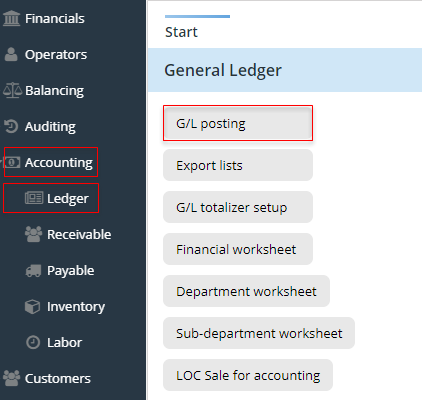
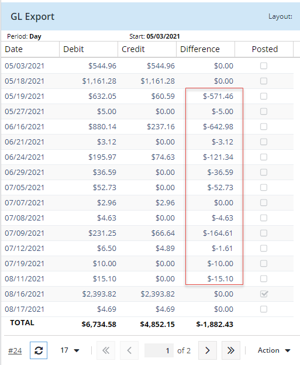
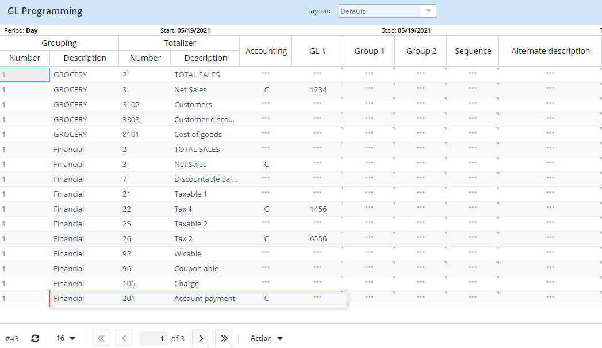
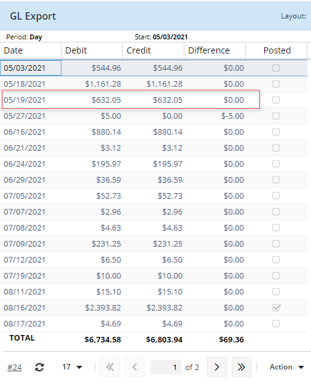
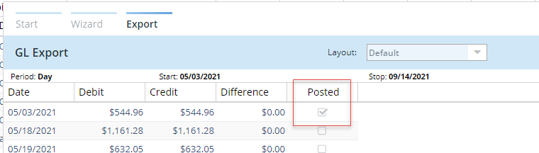
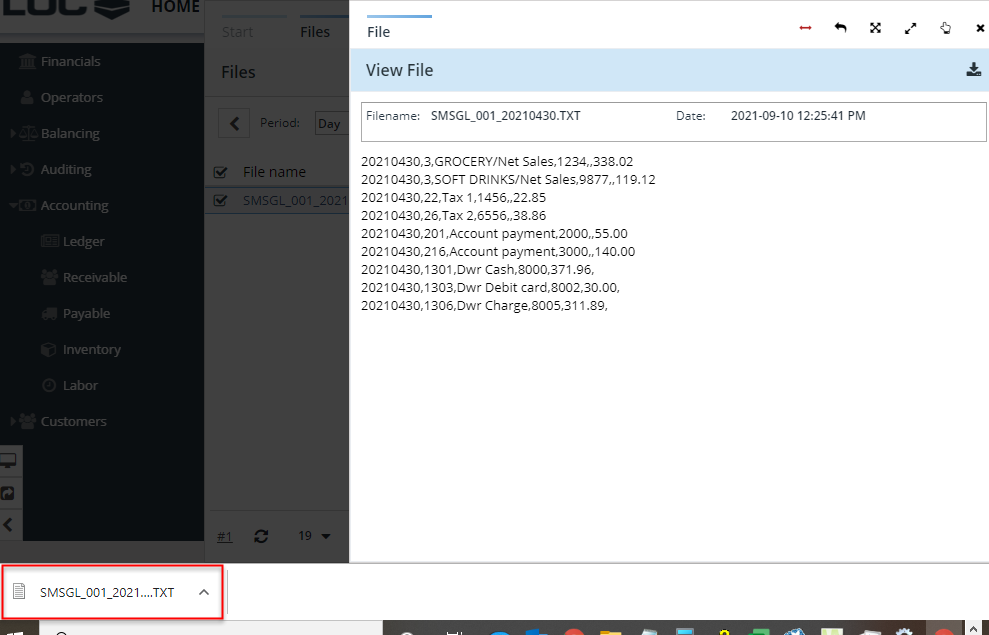

Information
The Ledger entry in eSuite Manage module allows you to program the general ledger, post and generate the generic accounting export for G/L (General Ledger) in order to impact the balance sheet's assets and liabilities.
Post to the General Ledger
When the accounting software's accounts are programmed in eSuite Manage, your data can be exported to your accounting software. This export is done manually. The sales (General Ledger) (GL) and the accounts payable (AP) are posted separately.
Steps:
- In the launcher, click the arrow on Accounting entry to display its menu.
- Click on Ledger
- Select G/L posting
-

-
Add all necessary criteria in the wizard and click Execute
- Define which days to post
- Select target
- Enable 'Show not posted days only' if you just want to display the days that are not posted yet
- Once the days are listed you have to export them to the General Ledger accounts of your accounting software. The sales are exported according to the General ledger programming.
-
NOTE: To be able to export the sales, the debit and credit columns must balance. If you have a difference you can select to view the details by clicking on Action.

In most cases the reason for a difference is caused by a totalizer missing a GL account number. Using the example above, you can see a GL difference in multiple dates. Let us use 05/19/2021 as an example. In the General Ledger setup you can:
- Select Period by Day and enter the start date and stop date of 05/19/2021
- Select the 'Get totalizer list from report' option and execute
- Where missing and needed, enter a G/L number on the totalizers with a credit or debit accounting affect. In the example below, you do not need to add a GL account number to Financial - net sales since you are using the GL account number by department - GROCERY. However you do need to add the GL account number for Account payment:
-

Once you enter the missing GL account number, run GL posting again. If nothing else is missing, the GL debits and credits will balance. Using our example above of date 05/19/2021 it now balances along with other days that were not balancing due to the missing GL account for Account payment totalizer 201:

- Once debits and credit match you can select to Post day or Post all. Once posted you will see the Posted enabled
-

- This will generate a G/L export text file. To view select Export List in Accounting>Ledger
- Enter date and click on Apply
- Select the txt file for the date in which you would like to download the file and double click
- The G/L export file details will be shown on screen, click on the icon to download
- Open the G/L export file downloaded and save
-
